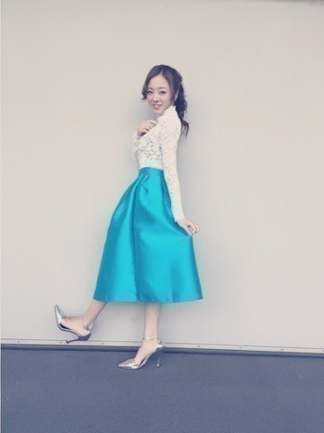
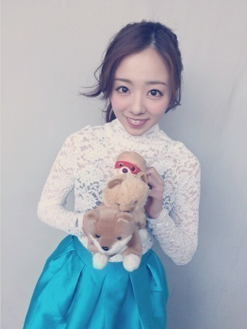
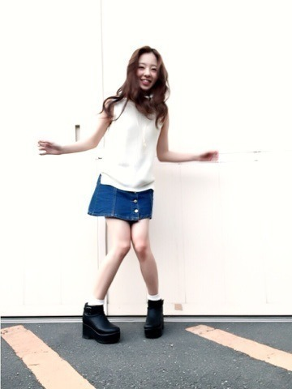

| 2016/05 06 Fri | ー握手会まに私服～ サスケの命日 川 村まひろ |
こんにちわ．
川村 まひろです.＊
東北ツアーから戻ってきても，名古屋や京都等... ほとんど東京に居ない状況ですね♡ぇへへ
そんな中まずは，名古屋での個別握手会の私服です．
じゃん♡

白のぴったりしたトップスに
ターコイズブルーのスカート.＊
シルバーのピンヒール.＊
このスカートすごく綺麗...♡
お店で一目惚れし購入してしまいました♡
そしてこれからね，
わんこ達を机に飾って握手会することになったよU・x・U
とりあえず初めての名古屋では，お家にずっと飾っていたこの3匹♡わら

かわいーでしょ♡？
柴犬とポメラニアン♡
3匹ともファンの皆さんから頂いたものです.＊ お花の中に埋もれてたのU・x・U
下の柴犬は「マリ」
ポメラニアンは「サスケ」
マリは和歌山のじいじいん家の柴犬の名前がマリだから． ポメラニアンは私の家族だったポメラニアンのサスケ♡
これから少しずつ増えていくかも♡
名前は私1人で決めれないから，皆で決めましょーねー．
七瀬の方のサスケ，マント着てる♡笑

はい，そして昨日は京都でした♡
地元関西～.＊ ただいま～．
京都の私服は...
ノースリーブのハイネックニット♡
デニムスカート♡
名古屋とはまた違った感じよぉ.

ぁ... あのね，京都ね，
ワンコ達持って行くの忘れたのーー．笑 ごめんね.
握手しに来てくれた皆さんありがとうございます.＊ 皆の優しい人柄が伝わりました...
いつも応援してくれてありがとう♡
また早く会いたいです.＊
そしてね，昨日，5月5日は，サスケの命日でした. 私は握手会だったからサスケに会いに行けなかったけど，両親は行ってきたみたいで，写真だけ送ってもらいました^ ^
今さっき，サスケの事を思い出して「ひまわりの約束」を歌ってきたんだけど，涙がとまらんかった.
サスケには沢山救ってもらったからね... 沢山笑顔にしてくれて， 沢山心を癒してくたのよ．
きっとね，今も天国で走り回ってると思う． ひまわり畑でね.＊
サスケがお墓に入る時ね，沢山のヒマワリに囲まれて優しい顔で寝てたの♡
今でも私の心の中ではサスケが走り回ってます♡ぇへへ
サスケ、これからも元気でねーヾ(＠⌒ー⌒＠)ノ
また更新します.
コメント(285)
2016/05/06 17:06